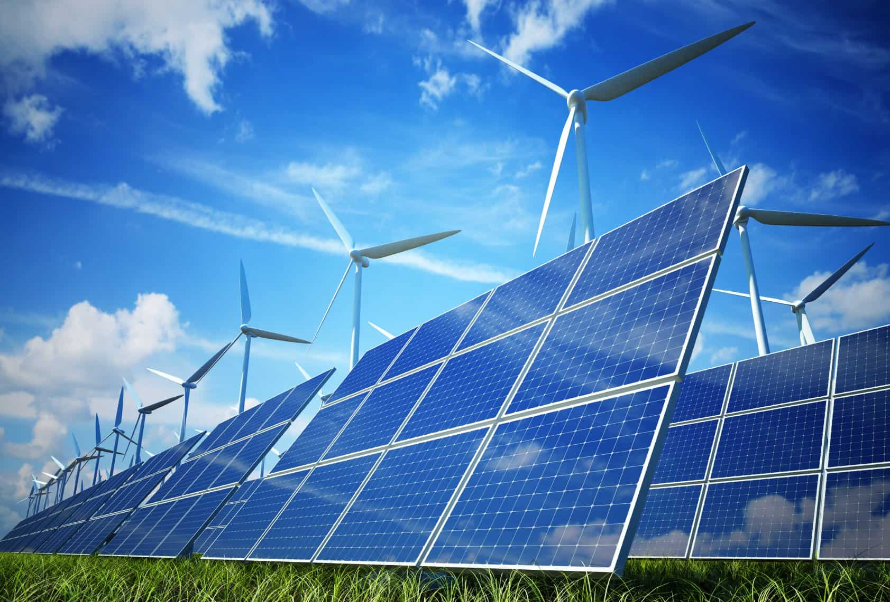

- Energie regenerabilă – În 2024, peste 56% din electricitatea produsă în Spania a provenit din surse regenerabile (eolian, solar, hidroelectric), un record european. Spania ocupă locul 2 în UE la capacitatea solară instalată, după Germania.
- Emisii de CO₂ – Emisiile de gaze cu efect de seră au scăzut cu aproximativ 18% între 2005 și 2023, conform datelor MITECO. Sectoarele industrie și transport rămân principalele provocări, generând împreună peste 50% din total.
- Apa și seceta – Spania este cea mai aridă țară din UE: rezervele de apă au atins în 2023 doar 38% din capacitate, iar regiunile Catalonia și Andaluzia au impus restricții severe pentru consumul casnic și agricol. Desalinizarea acoperă deja peste 5% din necesarul național de apă potabilă.
- Biodiversitate și arii protejate – Aproximativ 27% din teritoriul Spaniei face parte din rețeaua Natura 2000, cea mai extinsă rețea de arii protejate din Europa. Țara găzduiește 16 parcuri naționale, printre care Doñana, Teide și Picos de Europa.
